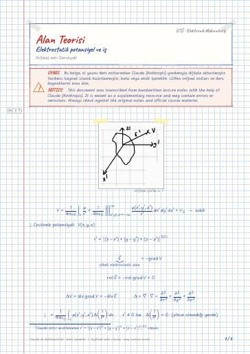

Elektromanyetik Alan Teorisi · Dijital ders notu
Elektrostatik potansiyel ve iş
- Ders
- Elektromanyetik Alan Teorisi (ELM341)
- Dönem
- 5. Dönem · 2023–2024 Güz
- Biçim
- PDF · 3 sayfa · 0,1 MB · el yazısı görünümlü LaTeX
- Orijinal not
- Ders6.pdf

Uyarı: Dijital notlar, el yazısı notlardan Claude (Anthropic) yardımıyla oluşturulmuştur; yardımcı kaynak olarak hazırlanmıştır ve hata içerebilir. Orijinal notları ve resmi ders kaynaklarını esas alın.
The digital notes were created from the handwritten notes with the help of Claude (Anthropic); they are meant as a supplementary resource and may contain errors. Always rely on the original notes and the official course materials.
The digital notes were created from the handwritten notes with the help of Claude (Anthropic); they are meant as a supplementary resource and may contain errors. Always rely on the original notes and the official course materials.
Notun metni
Düz metin olarak göster (formüller ve çizimler yoktur)
dışarıdan yapılan iş
V_B : bir birim yük sonsuzdan sonlu bir B noktasına yapılan işe o noktadaki potansiyel denir.
q=1 C yükü A'dan B'ye getirilinceye kadar yapılan işe potansiyel fark denir.
Enerjiyi biz harcadık anlamına gelir
çünkü F bizim uyguladığımız kuvvet
W_AB=0 ne zaman olur
* İş yoldan bağımsızdır.